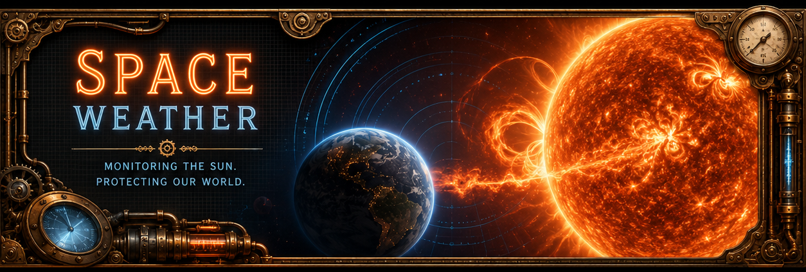

X-ray Class
--
GOES 0.1-0.8 nm

Beta
Space Weather Feeds

Learn how every feed and chart functions. Know the science.
When SDO is down, use NOAA
NOAA Space Weather
A compact readout built from public NOAA/SWPC JSON products. Values refresh when the page loads and gracefully show unavailable if a source blocks or times out.
Use this to quickly align the page around a CME workflow: SDO for source-region context, coronagraph for ejecta, and ENLIL for modeled propagation.
Ready to align SDO, coronagraph, and ENLIL viewers.
Loading NOAA active regions and flare probabilities...
| NOAA Region | Location | Mag Class | Spot Class | Area | C / M / X Flare % | Trend |
|---|---|---|---|---|---|---|
| Loading active regions... | ||||||
Sources: NOAA/SWPC GOES X-ray and particle flux, planetary Kp, real-time solar wind, active regions, and flare probability products.
Click any panel to zoom the source image. These NOAA/SWPC products summarize current solar radiation, geomagnetic activity, and solar wind conditions without hiding the feeds inside a collapsible block.
How to read it: X-ray flux tracks flare class, proton flux shows radiation storm risk, and Kp summarizes global geomagnetic disturbance. A sharp X-ray rise followed by proton or Kp response can signal a more consequential solar event.
How to read it: K values are local, three-hour disturbance levels. They are useful for seeing whether geomagnetic activity is regional, rising quickly, or sustained across multiple observation windows.
How to read it: A values compress the day into a more linear activity estimate. Use it as the daily context behind shorter K-index changes and longer geomagnetic storm periods.
How to read it: Watch Bz most closely. A sustained negative Bz lets solar wind couple into Earths magnetic field; high speed and density can strengthen the geomagnetic response.
Sourced from NOAA Space Weather Prediction Center - source products update on their published cadence.
Flip through SDO wavelengths in one viewer. Each channel highlights a different solar layer, temperature range, or activity type. Magnetic field-line images are included for the selected wavelength where SDO provides a PFSS overlay.
PFSS field-line overlays show modeled magnetic connectivity above the visible solar disk. They help connect loops, active regions, and coronal-hole structure with the selected wavelength.

Sourced from NASA Solar Dynamics Observatory (SDO) - Updated frequently by source feed
Coronagraphs block the bright solar disk so the faint outer corona and outward-moving CMEs can be seen. Use this viewer to compare GOES-19 CCOR-1, LASCO C2, and LASCO C3 in one place.
Sources: NOAA/SWPC CCOR-1 and SWPC-hosted SOHO/LASCO imagery. Coronagraph products update as source data is available.
A modular view of visible-disk magnetic structure, NOAA-numbered active regions, and farside sunspot monitoring resources. Region numbers in the Active Region Watch table link to the NOAA region locator model below.

How to read it: HMI maps line-of-sight magnetic polarity. Bright contrasting patches mark active regions where complex magnetic fields can store flare-producing energy.
Loading NOAA active-region locator...
Model source: NOAA/SWPC solar_regions.json. This lightweight disk model plots current NOAA region numbers from the same feed used in the Active Region Watch table.
Far-side active regions are inferred using helioseismology: acoustic travel-time shifts reveal large magnetic regions before they rotate onto the Earth-facing disk. Use this as early context alongside NOAA numbered regions.
Alternate sunspot resource:
Stanford Magnetograms & Sunspot Imagery
These SEAESRT products show the near-Earth radiation environment and spacecraft charging risk. Click any panel to zoom in for operational reading.
How to read it: Use this as the map/context layer. It helps relate spacecraft altitude and location to radiation belt structure and changing near-Earth particle conditions.
How to read it: Stronger hazard colors indicate a greater charging environment. Risk can rise during geomagnetic disturbances when energetic electrons are enhanced.
How to read it: Rising values mean the modeled charging hazard is increasing for that longitude sector. Compare sectors to see whether risk is localized or broad.
How to read it: This longitude slice helps identify whether hazardous charging conditions are rotating into or out of a particular orbital sector.
How to read it: Compare this panel with the other longitudes to spot delayed or sector-specific hazard increases after geomagnetic activity.
How to read it: Use alongside the other sectors to determine whether spacecraft charging risk is persistent, drifting, or tied to a specific longitude region.
Sourced from NOAA Space Weather Prediction Center SEAESRT products.
ENLIL models solar wind and CME propagation through the inner heliosphere. It is now displayed directly on the page so it behaves like the other live viewers instead of opening from a hidden container.
How to read it: The Sun is at the center and spiral structures show solar wind streams shaped by solar rotation. Disturbances moving outward toward Earths orbit can indicate possible CME or high-speed stream arrival timing. Treat it as model guidance, then confirm with ACE/DSCOVR solar wind data and geomagnetic indices.
Sourced from NOAA Space Weather Prediction Center - updated as source model frames are available.


Sourced from NOAA Space Weather Prediction Center - Updated every 30 minutes